Brand reference / Working edition
Style guide
01 / Identity
The wordmark
The current wordmark is set in Glass Meridian Light, with open letter spacing. The dark version below is a proposed alternate for review.
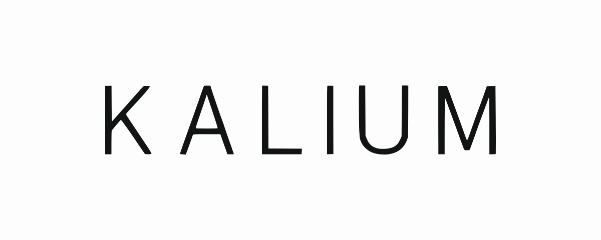
Current / Ink on paper
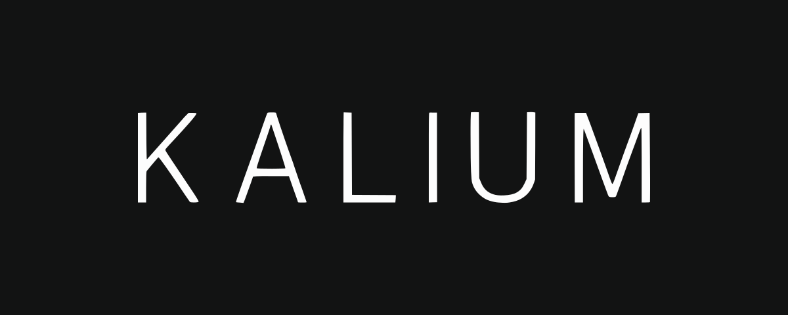
Proposed / Paper on ink
02 / Typography
Two voices, four cuts
Glass Meridian Grotesque · Light
Better choices,
companies, futures.
ABCDEFGHIJKLMNOPQRSTUVWXYZ
abcdefghijklmnopqrstuvwxyz
0123456789 & @ % ? !
Current use / Body copy, page titles and wordmark
Download font TTFGlass Meridian Grotesque · Regular
Public goods,
by design.
ABCDEFGHIJKLMNOPQRSTUVWXYZ
abcdefghijklmnopqrstuvwxyz
0123456789 & @ % ? !
Available / Labels and emphasis
Download font TTFMr Science · Regular
Public goods
at formation.
ABCDEFGHIJKLMNOPQRSTUVWXYZ
abcdefghijklmnopqrstuvwxyz
0123456789 & @ % ? !
Current use / Section headings in sentence case
Download font TTFMr Science · Light
A different
kind of return.
ABCDEFGHIJKLMNOPQRSTUVWXYZ
abcdefghijklmnopqrstuvwxyz
0123456789 & @ % ? !
Available / Alternate display treatment
Download font TTFEditorial labels
01 — Concede the machine
Glass Meridian Grotesque Light · Uppercase · Editorial red
Use for numbered chapter openings and short editorial signposts. Set a two-digit number, an em dash and a brief title. Center the line with generous space around it.
- Size / leading
- 20 px / 30 px
- Letter spacing
- 0.14 em
- Color
- Editorial red · #C9362B
03 / Color
The current palette
Drawn from the homepage and white paper. Paper and ink lead; botanical green, indigo and editorial red provide accents.
Paper
Page background
Ink
Wordmark & headings
Graphite
Body text
Botanical
Links & interaction
Indigo
Editorial emphasis
Editorial red
Numbered chapter labels & editorial signposts
Fine rule
Dividers · not text
Select a hex value to copy it.
04 / Graphic elements
Small, deliberate gestures


Technical marks
16 marks for margins, dividers and editorial details. Each is available as an SVG.
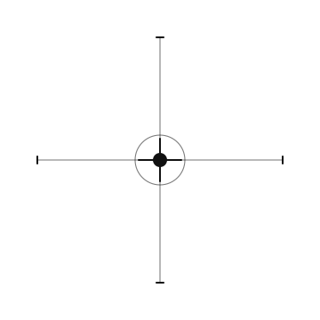

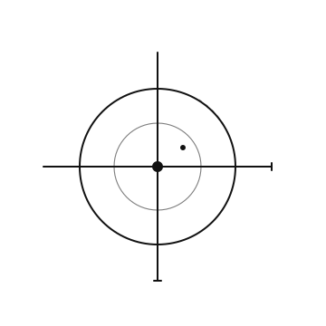

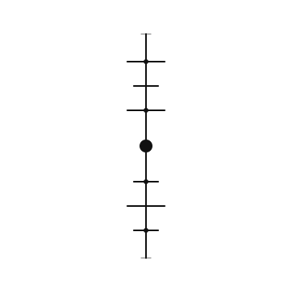

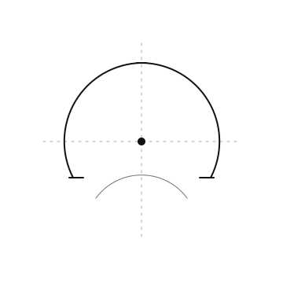

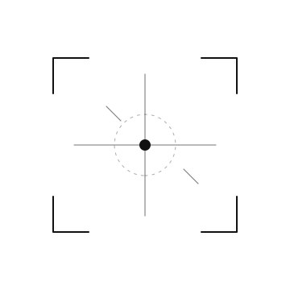

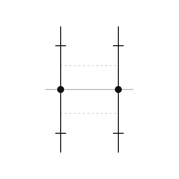

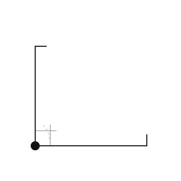

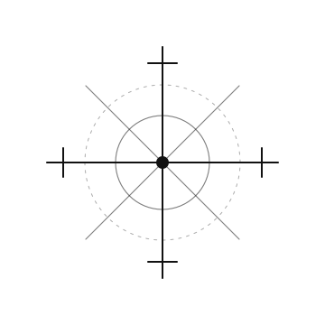

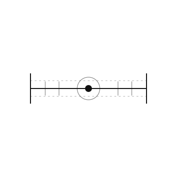

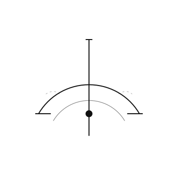

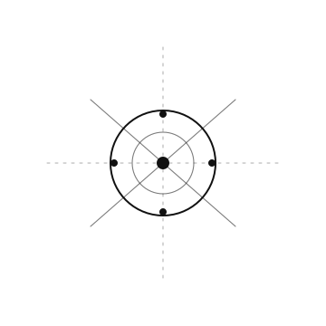

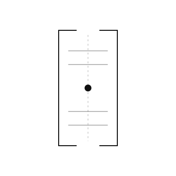

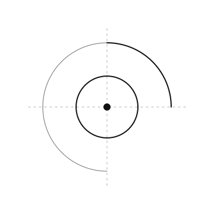

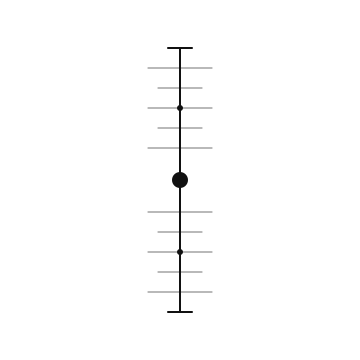

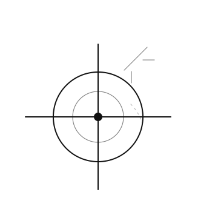

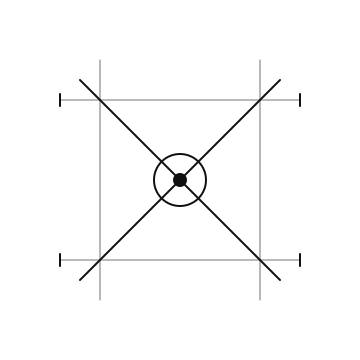

{kind=link}
05 / Imagery & motion
Complexity, quietly alive

Dark botanical greens, fine natural detail and a single red flower.
The composition stays anchored. Selected tendrils respond to the pointer with slow, flexible movement.
View the living illustration06 / Emergent forms
Botanical compositions
10 compositions. Select an image to view it full size, or download the original PNG.


07 / Emergent forms
Botanical fragments
17 fragments. Select an image to view it full size, or download the original PNG.


08 / Publication
Loaded
PNG & SVG: transparent background. JPEG: white background.